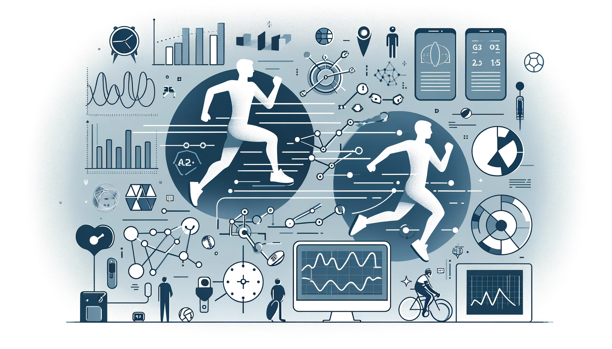
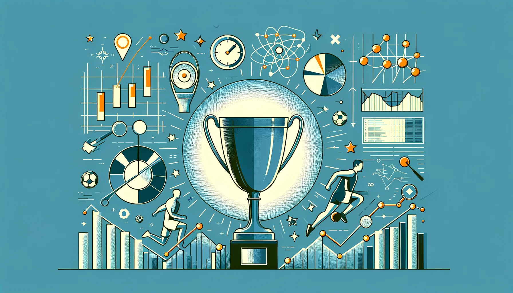
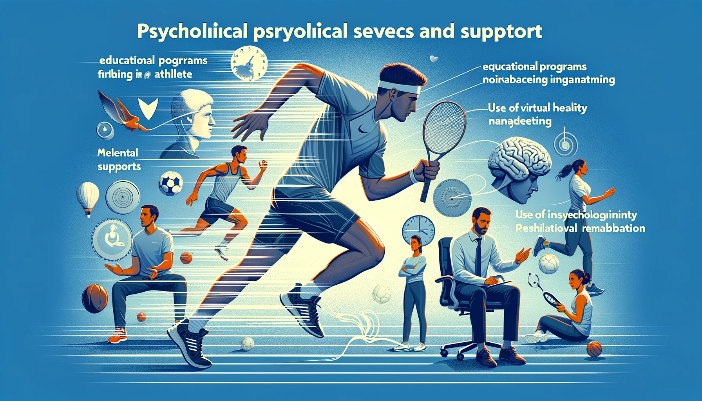
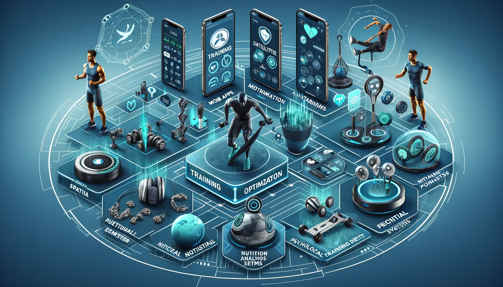

Революціонізуйте свої тренування та аналіз даних у спорті з передовими ІТ-рішеннями від FitData Tech. Поєднання наукових досліджень, інноваційних технологій та глибокого розуміння потреб спортсменів дозволяє нам надати вам інструменти для підвищення ефективності тренувань та досягнення нових висот у спортивних досягненнях. Незалежно від вашого рівня підготовки, FitData Tech допоможе вам тренуватися розумніше, а не важче.
Ласкаво просимо до FitData Tech – вашого провідника у світі інноваційного спорту та технологій. Наша місія полягає у тому, щоб перетворити спосіб, яким спортсмени тренуються та аналізують свої досягнення, використовуючи передові ІТ-рішення. Ми поєднуємо наукові дослідження, передові технології та глибоке розуміння потреб спортсменів, щоб надати інструменти, які допомагають підвищити ефективність тренувань та досягти нових висот у спортивних досягненнях. У FitData Tech ми віримо, що кожен спортсмен, незалежно від рівня підготовки, може виграти від точного аналізу даних. Наші рішення допомагають виявляти слабкі місця, відстежувати прогрес та оптимізувати тренувальні плани. Від аматорських спортсменів до професійних атлетів – ми надаємо інструменти для кожного, хто прагне до покращення своїх спортивних результатів.
 Більше про насТехнології FitData Tech
У FitData Tech ми прагнемо використовувати силу технологій для трансформації спортивних тренувань та аналізу. Наші інноваційні рішення включають: Передові Аналітичні Інструменти: Ми розробляємо аналітичні інструменти, які дозволяють спортсменам та тренерам глибше зануритися в аналіз даних. Від моніторингу серцевого ритму до аналізу рухів – наші інструменти допомагають виявити ключові аспекти для покращення виступів. Індивідуальні Тренувальні Програми: Завдяки алгоритмам машинного навчання ми створюємо персоналізовані тренувальні програми, які враховують індивідуальні особливості кожного спортсмена, забезпечуючи максимальну ефективність тренувань. Інтерактивні Мобільні Додатки: Наші мобільні додатки дозволяють спортсменам відстежувати свої тренування, аналізувати прогрес та отримувати зворотний зв'язок у реальному часі, забезпечуючи постійний контроль над тренувальним процесом. Віртуальна Реальність та Симуляції: Ми використовуємо технології віртуальної реальності для створення симуляцій, які допомагають спортсменам відпрацьовувати техніку та стратегію без фізичного навантаження, знижуючи ризик травм.
Більше про ІнноваціїДані
У FitData Tech ми розуміємо, що сила даних у спорті - це ключ до успіху. Наш підхід до аналізу даних зосереджений на трьох основних аспектах: Глибокий Аналіз Показників: Ми використовуємо передові алгоритми для аналізу великих обсягів даних, що дозволяє нам виявляти тенденції, прогнозувати результати та оптимізувати стратегії тренувань. Від моніторингу фізичного стану до аналізу тактики гри - наші інструменти допомагають спортсменам та тренерам приймати обґрунтовані рішення. Індивідуалізація Тренувань: Завдяки детальному аналізу даних, ми створюємо індивідуальні тренувальні плани, які враховують унікальні фізичні та психологічні характеристики кожного атлета. Це дозволяє максимально ефективно використовувати час тренувань та прискорювати прогрес. Зв'язок з Фанатами: Ми також використовуємо дані для залучення фанатів, аналізуючи їхні переваги та поведінку. Це допомагає спортивним організаціям створювати більш персоналізований та захоплюючий досвід для своїх прихильників.
 Зануритися в даніХарчування
itData Tech розуміє, що харчування є критично важливим аспектом у спортивній продуктивності. Ми пропонуємо інноваційні технологічні рішення, які допомагають спортсменам та тренерам оптимізувати харчові плани та відстежувати харчування для досягнення найкращих результатів. Технології для Контролювання Харчування: Мобільний Додаток для Відстеження Харчування: Додаток від FitData Tech дозволяє користувачам легко вводити дані про своє харчування, відстежувати калорії, макро- та мікронутрієнти. Інтеграція зі спортивними гаджетами для автоматичного обчислення потреб у поживних речовинах залежно від інтенсивності тренувань. Персоналізовані Харчові Плани: Алгоритми штучного інтелекту аналізують дані про здоров'я, фізичний стан та цілі спортсмена, пропонуючи індивідуальні харчові плани. Враховуються особливості дієти, алергії та харчові переваги. Аналіз Даних та Звітність: Збір даних про харчування для аналізу тенденцій та впливу дієти на спортивну продуктивність. Генерація звітів, які допомагають спортсменам та тренерам робити обґрунтовані рішення щодо харчування. Чому Харчування Важливе для Спортсменів: Правильне харчування забезпечує необхідну енергію для тренувань та змагань. Відновлення м'язів та загальне здоров'я залежать від збалансованого споживання білків, вуглеводів та жирів. Адекватна гідратація та поповнення електролітів є ключовими для запобігання травмам та підтримки високого рівня продуктивності.
 Шлях до здоров'яПсихологія
Психологи та послуги в FitData Tech Вступ до Психологічних Послуг: У FitData Tech ми розуміємо, що психологічний стан має вирішальне значення для спортивної продуктивності. Наші послуги зосереджені на використанні передових психологічних технік та технологій для підтримки спортсменів у досягненні їхніх цілей. Основні Послуги: Освітні Програми для Покращення Продуктивності: Навчання спортсменів технікам візуалізації, постановці цілей та самомотивації. Використання інтерактивних додатків для відстеження прогресу та самоаналізу. Підтримка Психічного Здоров'я: Робота зі спортсменами, які мають психічні розлади, забезпечуючи інтегровану підтримку. Використання комбінації спортивної психології та психотерапевтичних методів. Консультації та Коучинг: Індивідуальні та групові сесії для розвитку ментальної стійкості та управління стресом. Розробка персоналізованих стратегій для оптимізації ментальної готовності до змагань. Спеціалізовані Програми: Управління Тривогою та Стресом: Застосування технік релаксації та майндфулнес для зниження тривожності перед змаганнями. Розробка індивідуальних планів для кожного спортсмена, щоб допомогти їм залишатися спокійними під тиском. Візуалізація та Ментальна Підготовка: Використання віртуальної реальності та інших технологій для створення реалістичних сценаріїв тренувань та змагань. Навчання спортсменів техніці візуалізації для підготовки до важливих подій. Реабілітація після Травм: Психологічна підтримка у процесі відновлення після травм. Розробка стратегій для відновлення впевненості та повернення до спорту. Вплив Спортивної Психології: Наші послуги допомагають спортсменам покращувати їхню продуктивність, знижувати рівень стресу та підвищувати мотивацію. Ми використовуємо доказові підходи та інноваційні технології для забезпечення найкращих результатів. FitData Tech забезпечує комплексний підхід до спортивної психології, допомагаючи спортсменам досягати високих результатів не тільки фізично, але й ментально.
 Ментальна сила
Ментальна сила
Що ми пропонуємо?
FitData Tech пропонує передові технології для оптимізації тренувань та аналізу даних у спорті. Наші інноваційні рішення, включаючи мобільні додатки для індивідуальних тренувань, системи біометричного моніторингу та платформи для аналізу даних, забезпечують глибокий аналіз та персоналізацію підходів до тренувань. Завдяки віртуальній реальності та інтелектуальним фітнес-гаджетам, ми пропонуємо унікальні можливості для ментальних тренувань та підвищення ефективності рухів. Наші платформи для харчування та дієти, а також системи психологічної підтримки, допомагають спортсменам досягати оптимального стану здоров'я та благополуччя. Продукт від FitData Tech: Мобільні Додатки для Тренувань: Персоналізовані тренувальні плани. Відстеження прогресу та аналіз результатів. Системи Біометричного Моніторингу: Відстеження фізіологічних показників (пульс, тиск). Аналіз стану здоров'я та витривалості спортсменів. Платформи для Аналізу Даних: Збір та обробка даних про тренування та змагання. Глибокий аналіз ефективності тренувань. Віртуальна Реальність для Тренувань: Симуляції спортивних ситуацій та змагань. Тренування ментальних навичок та стратегій. Інтелектуальні Фітнес-Гаджети: Носимі пристрої для відстеження активності. Аналіз ефективності рухів та навантажень. Платформи для Харчування та Дієти: Розробка індивідуальних харчових планів. Моніторинг споживання поживних речовин. Системи для Психологічної Підтримки: Інструменти для моніторингу психологічного стану. Програми для розвитку ментальної стійкості.
Ознайомитись з асортиментом Популярні Запитання
Контакти
Гудзь Любомир 1кн-23б 0932844208 lubomirgudz1@gmail.com